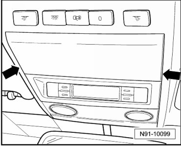
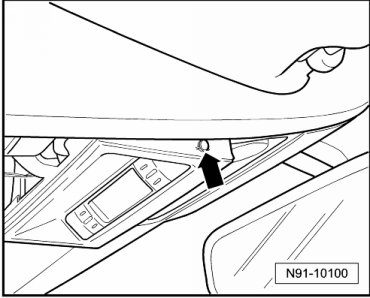
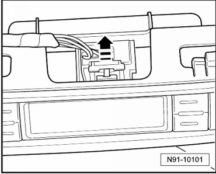
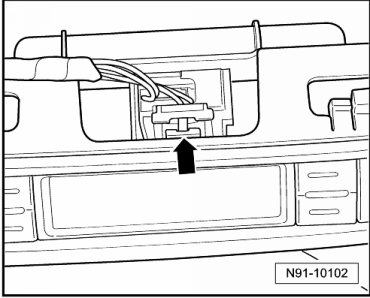

Control Head for Telematics
Control Head for Telematics
Removing
Before starting repair work, batteries must be disconnected!
- Unclip cover in roof console with a suitable screwdriver at locations marked with - arrows -.

- Unclip display unit with a suitable screwdriver on places marked with - arrow - on both sides.

Pull locking mechanism on display unit connector out in - direction of arrow -.

- Press securing tab in - direction of arrow - and remove connector.

• It is not possible to further disassemble and repair control head.
Installing
Installation is performed in the reverse order of removal.
- Check coding of Telematics system and code it anew if necessary. Refer to --> [ Telematics Control Module, Coding ] Testing and Inspection.